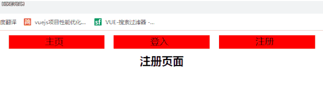

路由独立守卫，顾名思义就是这个路由自己的守卫任务，就如同咱们LOL，我们守卫的就是独立一条路，保证我们这条路不要被敌人攻克(当然我们也得打团配合)
在官方定义是这样说的：你可以在路由配置上直接定义 beforeEnter 守卫,这些守卫与全局前置守卫的方法参数是一样的。
const router = new VueRouter({
routes: [
{
path: '/foo',
component: Foo,
beforeEnter: (to, from, next) => {
// ...
}
}
]
})
参数如下：
beforeEnter(to,from,next)
// to 要进入的目标，路由对象
// from 当前导航正要离开的路由
// next 初步认为是展示页面；（是否显示跳转页面）
next()//直接进to 所指路由
next(false) //中断当前路由
next('route') //跳转指定路由
next('error') //跳转错误路由
我们在这里使用使用一个案例来演示它的用法；案例中独立路由单独检测是否在登入状态，在没有登录的情况下弹到登录界面，和全局登录效果一致，只不过只保留了自己；
import Vue from 'vue';
import VueRouter from 'vue-router';
Vue.use(VueRouter);
import Index from './Index/Index.vue'
import AA from './views/AA.vue'
import DD from './views/DD.vue'
import EE from './views/EE.vue'
export default {
routes: [
{
path: '/',
component: Index,
name: 'index',
children: [
{
path: 'AA',
component: AA,
name: 'aa',
beforeEnter: (to, from, next) => {
if (to.path == '/DD') {
next()
} else {
alert('请登入');
next('/DD')
}
}
}, {
path: 'DD',
component: DD,
name: 'dd'
},
{
path: 'EE',
component: EE,
name: 'ee'
},
]
}
]
}

为大家附上源码地址https://gitee.com/web94/vueluyouduxiangshouwei
如果觉得不错请点点手指，关注下我们公众号，我们会长期为您分享前端知识点；